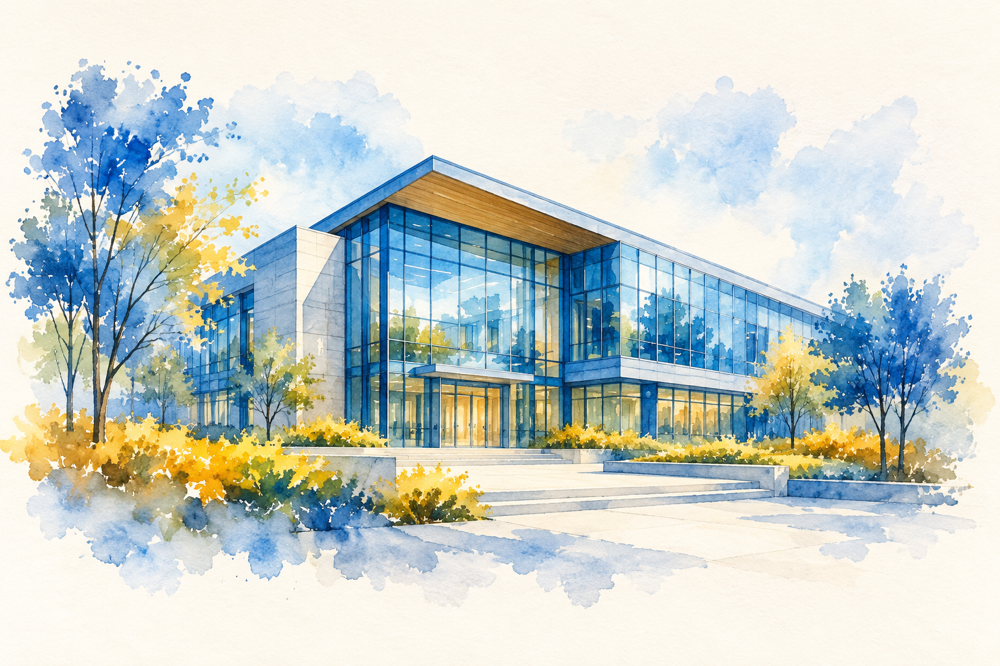

Welcome to my little corner
Building
with curiosity.
Software engineering · Research
Creative thinking, thoughtful building.
✧✧
Things I've been part of
Education
GPA: 3.6

University of Minnesota Twin CitiesMS in Computer ScienceGPA: 3.7